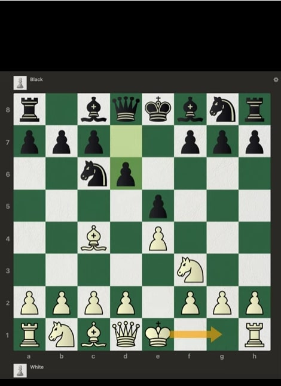
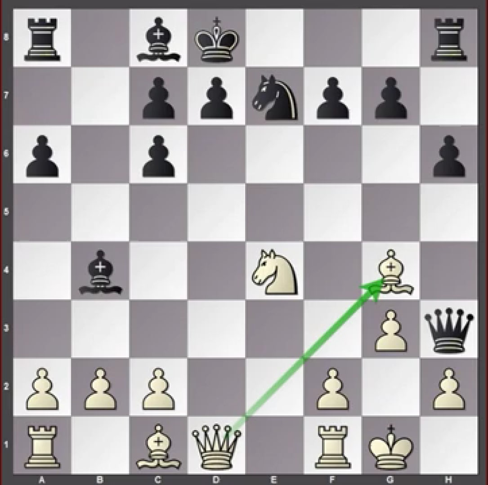
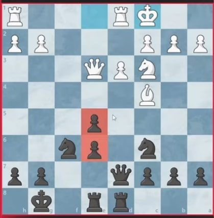

Contrôler le Centre
Le contrôle des cases centrales (d4, e4, d5, e5) est essentiel pour dominer la partie. Ces cases permettent à vos pièces de se déplacer rapidement vers toutes les zones de l'échiquier.

Protéger le Roi
Le roque est un moyen efficace pour protéger votre roi. Essayez de roquer tôt dans la partie et évitez d'exposer votre roi inutilement.
Coordination des Pièces
Une bonne stratégie consiste à coordonner vos pièces pour qu'elles se soutiennent mutuellement. Par exemple, les tours doivent idéalement être connectées (pas de pièces entre elles).
Éviter les Pions Faibles
Les pions isolés ou doublés sont souvent des faiblesses car ils ne peuvent pas être défendus par d'autres pions. Essayez de maintenir une structure de pions solide.
